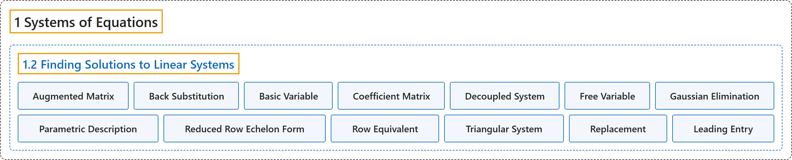

1.2 Finding Solutions to Linear Systems
Classification

Glossary
| Term | Definition | 中文翻译 | Source |
|---|---|---|---|
| 1.2 Finding Solutions to Linear Systems 求线性方程组的解 |
(No definition) | （无定义） | Austin, 2023, section 1.2 |
| Augmented Matrix 增广矩阵 |
"We then construct an augmented matrix by simply forgetting about the variables and recording the numerical data in a rectangular array." | 然后，我们只需略去变量，把数值数据记录在一个矩形阵列中，就构造出了增广矩阵。 | Austin, 2023, section 1.2 |
| Back Substitution 回代 |
"As this example demonstrates, triangular systems are easily solved by this process, which is called back substitution." | 正如这个例子所示，三角形方程组很容易用这一过程求解，这一过程称为回代。 | Austin, 2023, Observation 1.2.3 |
| Basic Variable 基本变量 |
"The variables \(x\) and \(y\) are called basic variables as they are determined once we make a choice of the free variable." | 变量 \(x\) 和 \(y\) 称为基本变量，因为一旦选定自由变量的取值，它们就随之确定。 | Austin, 2023, section 1.2 |
| Coefficient Matrix 系数矩阵 |
"We sometimes choose to focus only on the coefficients of the system in which case we write the coefficient matrix as \(\left[ \begin{array}{rrr} -1 & -2 & 2 \\ 2 & 4 & -1 \\ 1 & 2 & 0 \\ \end{array} \right]\)." | 有时我们选择只关注方程组的系数，此时把系数矩阵写成 \(\left[ \begin{array}{rrr} -1 & -2 & 2 \\ 2 & 4 & -1 \\ 1 & 2 & 0 \\ \end{array} \right]\)。 | Austin, 2023, section 1.2 |
| Decoupled System 解耦方程组 |
"We call such a system decoupled." | 我们称这样的方程组是解耦的。 | Austin, 2023, Observation 1.2.2 |
| Free Variable 自由变量 |
"Because there is no restriction on the value of \(z\), we call it a free variable, and note that the linear system has infinitely many solutions." | 由于对 \(z\) 的取值没有限制，我们称它为自由变量，并注意到该线性方程组有无穷多个解。 | Austin, 2023, section 1.2 |
| Gaussian Elimination 高斯消元法 |
"We will develop an algorithm, which is usually called Gaussian elimination, that allows us to describe the solution space of a linear system." | 我们将建立一种通常称为高斯消元法的算法，用它可以描述线性方程组的解空间。 | Austin, 2023, section 1.2 |
| Parametric Description 参数表示 |
"We will call this description of the solution space, in which the basic variables are written in terms of the free variables, a parametric description of the solution space." | 我们把解空间的这种用自由变量表示基本变量的描述称为解空间的参数表示。 | Austin, 2023, section 1.2 |
| Reduced Row Echelon Form 行最简形 |
"We say that a matrix is in reduced row echelon form if the following properties are satisfied. We call a matrix in reduced row echelon form a reduced row echelon matrix." | 如果一个矩阵满足下列性质，就称它是行最简形。我们把行最简形的矩阵称为行最简形矩阵。 | Austin, 2023, Definition 1.2.8 |
| Row Equivalent 行等价 |
"Since these operations act on the rows of the matrices, we say that the matrices are row equivalent." | 由于这些运算作用在矩阵的行上，我们说这些矩阵是行等价的。 | Austin, 2023, section 1.2 |
| Triangular System 三角形方程组 |
"Our original system, \(\begin{alignedat}{4} x & {} + {} & 2y & {}-{} & 2z & {}={} & -4 \\ & & -y & {}+{} & z & {}={} & 3 \\ & & & & 3z & {}={} & 3, \\ \end{alignedat}\) is called a triangular system due to the shape formed by the coefficients." | 我们原来的方程组 \(\begin{alignedat}{4} x & {} + {} & 2y & {}-{} & 2z & {}={} & -4 \\ & & -y & {}+{} & z & {}={} & 3 \\ & & & & 3z & {}={} & 3, \\ \end{alignedat}\) 因其系数排成的形状而称为三角形方程组。 | Austin, 2023, Observation 1.2.3 |
| Replacement 倍加变换 |
"We call this process replacement." | 我们称这一过程为倍加变换。 | Austin, 2023, section 1.2 |
| Leading Entry 首非零元 |
"We call this entry the leading entry in the row." | 我们称这个元素为该行的首非零元。 | Austin, 2023, section 1.2 |
References
Austin, D. (2023). Understanding linear algebra (2023 update). Retrieved October 29, 2026, from https://understandinglinearalgebra.org/home.html